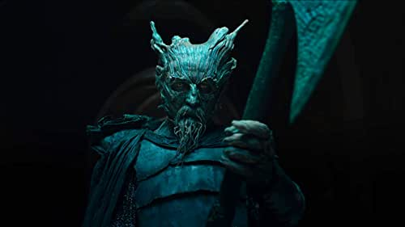
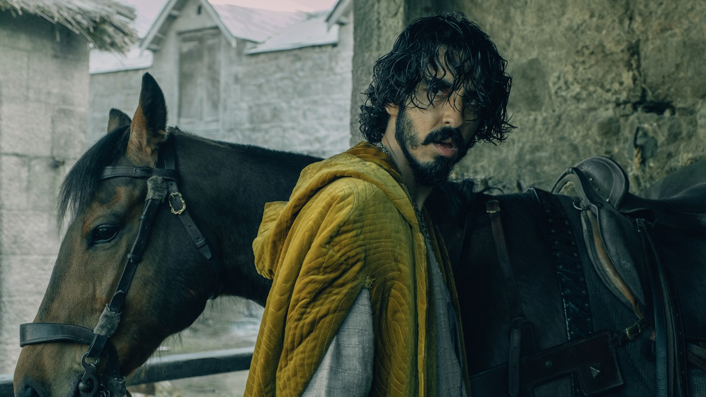

Dev Patel was born in Harrow, London, to Anita, a caregiver, and Raj Patel, who works in IT. His parents, originally from Nairobi, Kenya, are both of Gujarati Indian descent. His first role was in the UK TV series Skins (2007). His breakout role was in the Oscar winning film Slumdog Millionaire (2008). In May 2012, he played Sonny Kapoor in The Best Exotic Marigold Hotel (2011). In March 2015, he had a leading role in two major motion pictures released in the theaters at the same time: Chappie (2015) and The Second Best Exotic Marigold Hotel (2015).

Ralph Ineson:
Ralph Michael Ineson (born 15 December 1969) is an English actor and narrator. Known for his deep, rumbling voice, his most notable roles include William in The Witch, Dagmer Cleftjaw in Game of Thrones, Amycus Carrow in the last three Harry Potter films, Donald Bamford in the BBC drama series Goodnight Sweetheart, Chris Finch in the BBC sitcom The Office, and Nikolai Tarakanov in the HBO historical drama miniseries Chernobyl.
